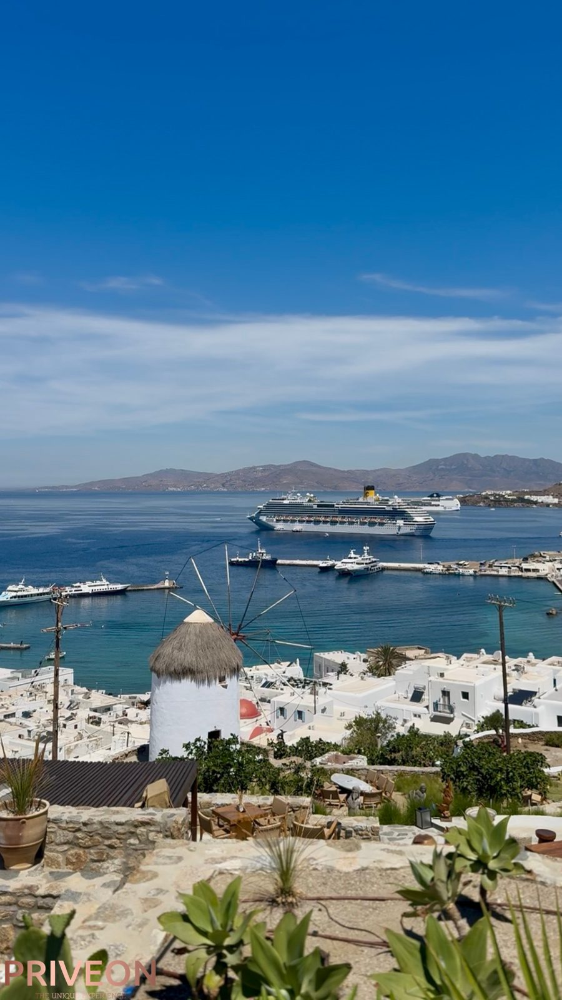
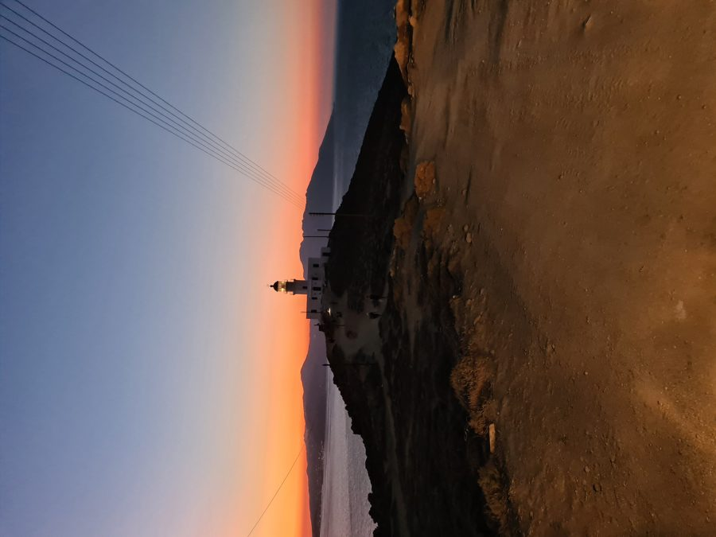
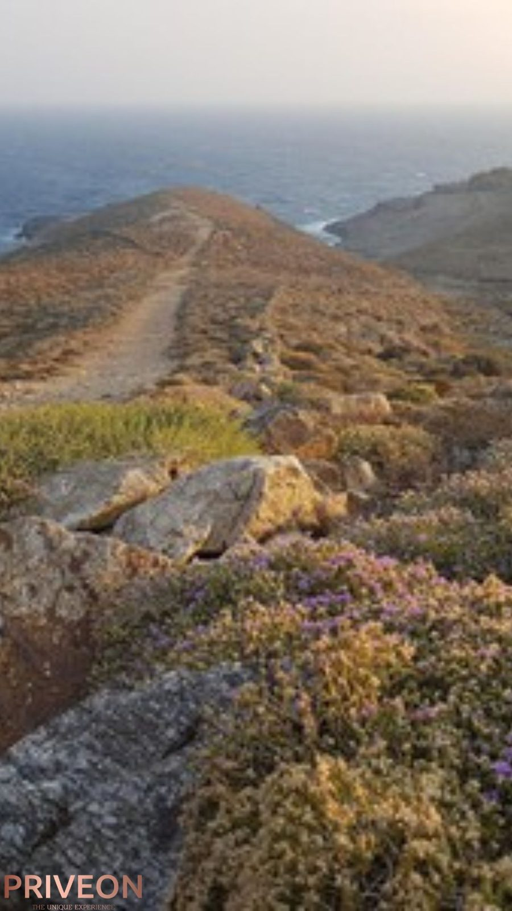
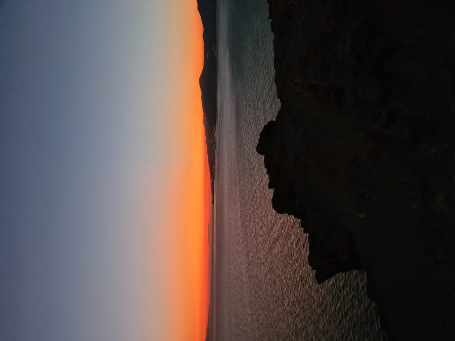
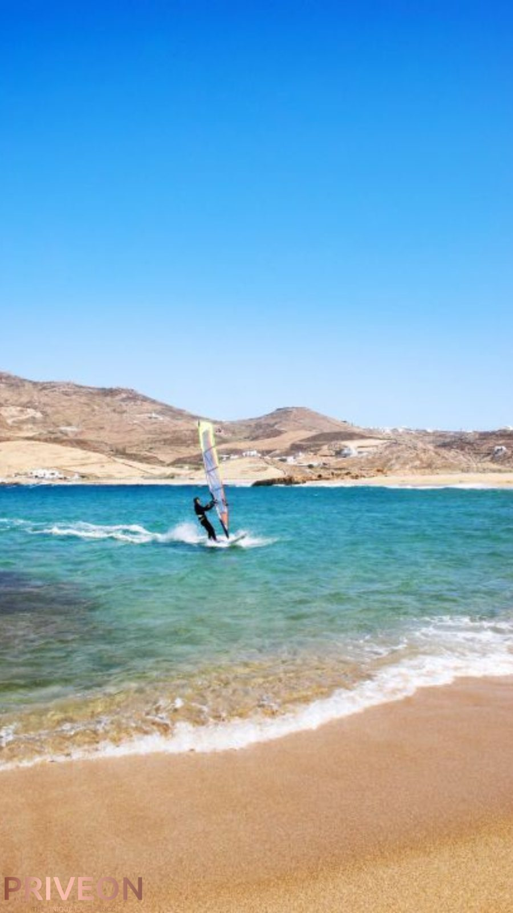
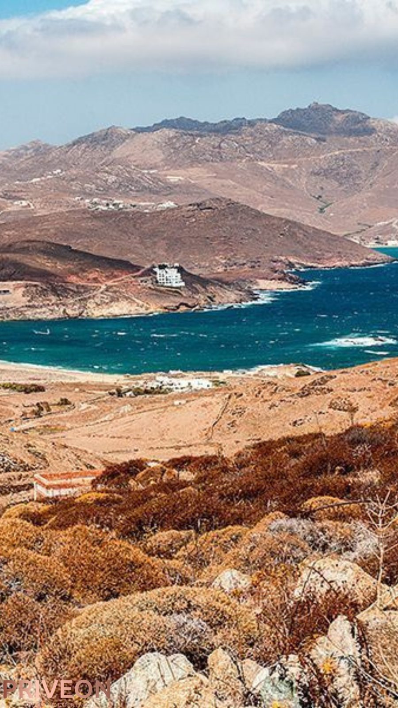
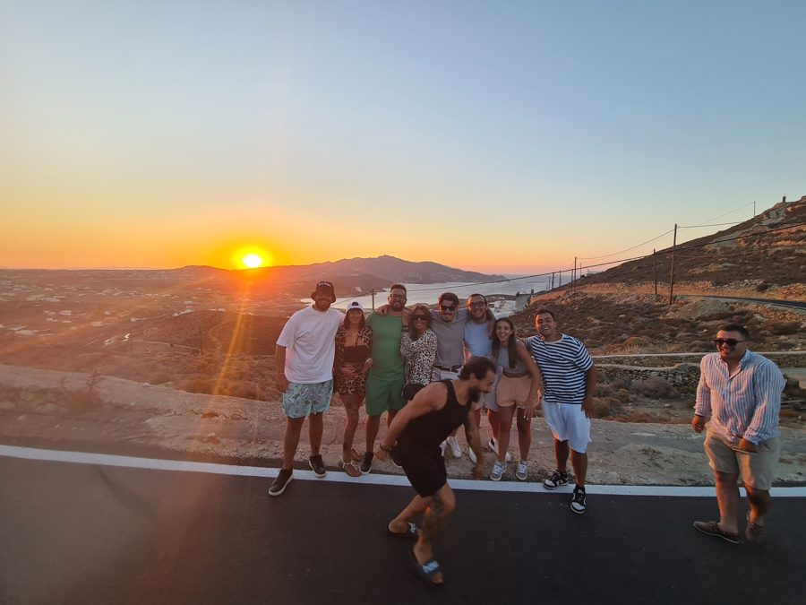
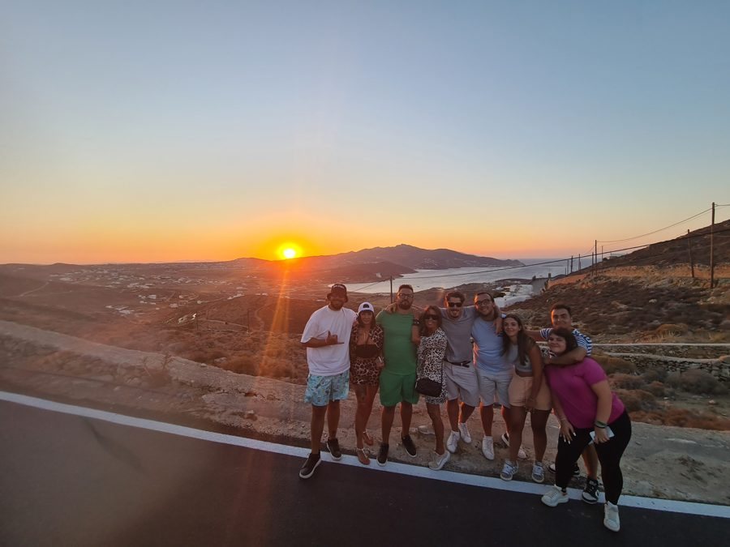

Five places on Mykonos a rental car will never reach. Three hours, one quad, a guide who knows exactly why they're worth the dust.
Everyone sees the windmills and Little Venice. Almost no one stands where the island runs out of road entirely — at the lighthouse, on the summit, on a beach with no parking lot. That's where this tour starts.
Below you, the whole town unclenches: white rooftops, the harbor, the windmills turning slow in the distance. Everyone photographs Mykonos from inside it. You're about to see it from above, the way its own hills have always seen it.

Northwest tip of the island, wind-scraped and nearly empty. The lighthouse has stood here since 1891, watching the strait toward Tinos long before anyone came here for a suntan. Stand at the edge and you'll understand why they built it here, and why almost no one visits it now.

The highest point on Mykonos, a small whitewashed chapel at the summit and, past it, the entire island laid out at once — Delos, the neighboring islands, the sea in every direction. Most visitors never climb this high. You'll get here without breaking a sweat.


A long stretch of sand on the north coast, wide open and half-wild, more surf than sunbed. No beach clubs competing for your attention here, just wind, water, and room to actually think.

Mykonos' most secluded beach, tucked at the end of a dirt track no rental sedan would survive. A small taverna, a handful of people who bothered to make the trip, and water so clear it looks staged. This is the payoff of coming by ATV instead of by car.

No stop for this one on the map. It just tends to happen — someone always has half an apple left, and the island's most patient local always seems to know it.
Per buggy, up to 2 guests
This tour exists for the five that aren't. Nothing about where it goes was left to chance — every stop is somewhere the island quietly keeps to itself.

